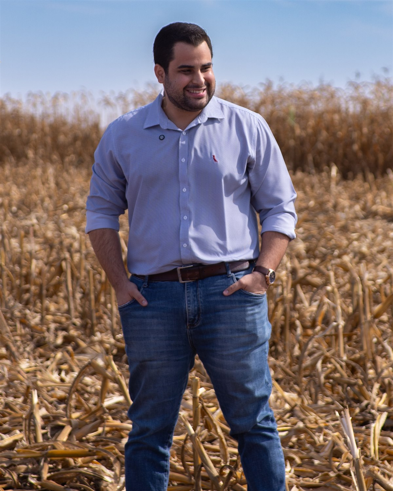

Sobre
Quem cuida do seu caso
A história e o método por trás do trabalho.
A origem
Uma história que começa em 2016, longe de qualquer tribunal
Em 2016, a família de Lucas quebrou financeiramente. Ele foi criado pelos avós depois desse colapso. Quem já viu o patrimônio da própria família em risco não precisa que ninguém explique o que isso faz com as pessoas: a conversa que muda de tom na mesa do almoço, a conta que não fecha, a sensação de que o que levou uma vida pra construir pode se desfazer em meses.
A advocacia veio depois disso, e por causa disso. Desde a faculdade, Lucas carregava a intenção de ter a própria porta. Em fevereiro de 2026, ela abriu: um escritório dedicado ao produtor rural, com foco no problema que ele conhece por dentro, a dívida que ameaça a terra de uma família.
A motivação declarada não é dinheiro. É saber exatamente o que o cliente está sentindo quando procura ajuda, porque ele já sentiu. E é ter transformado essa memória em preparo técnico pra resolver, não em discurso.


Quem é
Lucas Cabral, advogado do produtor rural
Advogado inscrito na OAB/GO sob o nº 67.854, à frente do escritório que leva o seu nome. Atende produtores rurais e suas famílias na região de Ponte de Pedra, Serranópolis e Jataí, no sudoeste goiano, em renegociação de dívida rural, contratos agrários e gestão financeira da porteira pra dentro.
Se puder ser lembrado por uma única coisa, que seja esta: um bom profissional, tecnicamente. Relacionamento abre porta, mas é a técnica que resolve o caso. Por isso o estudo vem antes do conselho: mercado, Plano Safra, decisões do STJ, regras do Banco Central, tudo passa pelo filtro do que muda de verdade na vida de quem planta.
Como o trabalho é feito
“Um Centro de Inteligência do Agronegócio — cura e traduz conhecimento técnico para a realidade do produtor, e vai até onde o produtor está.”
O método
01 — Radar
Pesquisa contínua
Mercado, Plano Safra, economia, leis, decisões do STJ/STF, Banco Central, Conab.
02 — Campo
Estar presente
Visitas a fazendas e famílias para aprender com a realidade de cada produtor — nunca para ensinar de cima.
03 — Oficina
Traduzir
O que foi aprendido vira conteúdo e orientação prática — artigos, vídeos, conversas.
04 — Distribuição
Chegar antes
Chegar até o produtor onde ele já está, antes de precisar de advogado.
O que guia cada decisão
Segurança e clareza, do primeiro contato ao último detalhe do contrato
- Segurança
- Calma
- Racionalidade
- Estratégia
- Presença
- Respeito